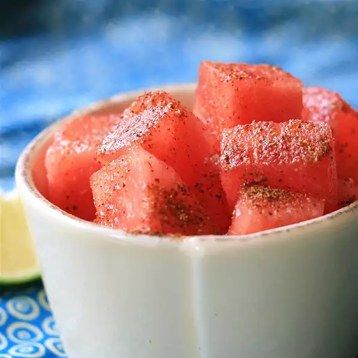

Watermelon: But Spicy?

Description
Did you wake up this morning and forget that you are invited to a 4th of July picnic? Are you expected to bring a dish and don't want to show up empty handed? We got
your back! Try this take on satisfying watermelon. This watermelon has all the juciness you would expect of a watermelon with some heat behind it. Don't worry, it is oddly
delicious!
Ingredients
- 1/4 teaspoon ground cumin
- 1/4 teaspoon ground coriander
- 1/4 teaspoon chili powder
- 1/4 teaspoon salt
- 1/8 teaspoon cayenne pepper
- 2 cubed seedless watermelon
- 1/2 lime, juiced
Steps
- Mix all of the spices into a bowl
- Sprinkle small amount of spice mixture into bottom of selected single size serving dish
- Place desired amount of watermelon into the dish
- Sprinkle more of the seasoning on top to desired amount
- Add lime juice over the watermelon